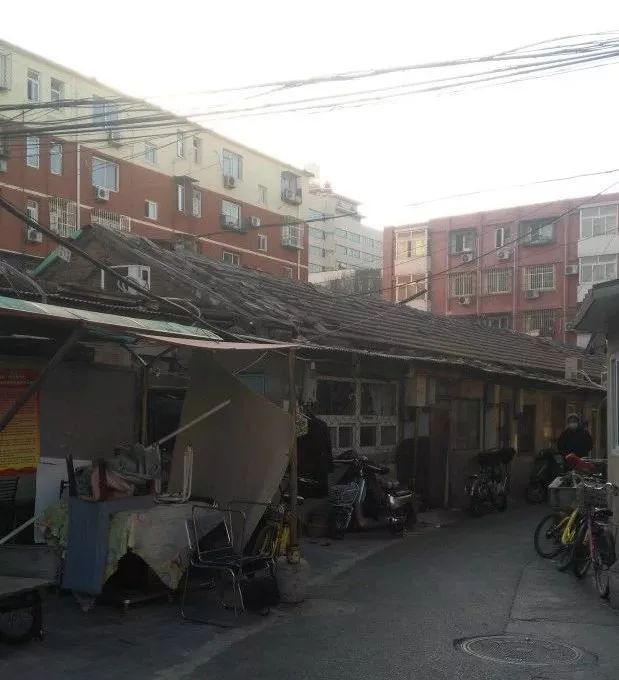
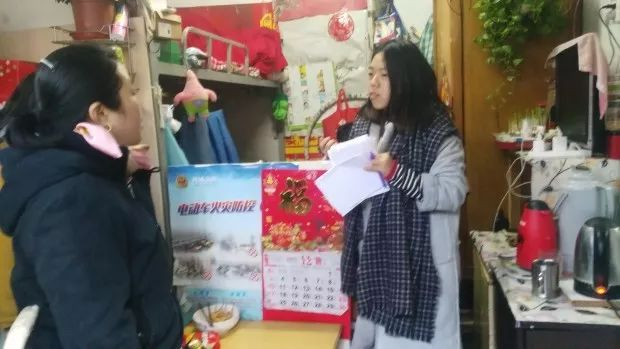

疫情下的深呼吸 | 不识字的我，心里压力很大
原文链接 备份链接 不识字的我，心里压力很大 口述者：李玲（化名）/山东籍 打工所在地：北京 编者注：李玲，47岁，不识字。因为丈夫腰病严重不能工作，她独自一人带着就读小学5年级的女儿冉冉在北京打工谋生。虽然李玲自己也患有腰间盘突出和心肌 …
我扛着这个家，尽力过一天算一天
口述者：刘霞（化名）/安徽籍
打工所在地：北京
编者注：刘霞， 44岁，没上过学，2015年带着患有肾病综合症的小儿子到北京求医。刘霞的丈夫打着多份工作支撑家庭，积劳成疾，在去年9月突然发现肝癌晚期，于12月9日去世。年前，刘霞在老家处理完丈夫的后事就回到了北京。此时，疫情开始爆发。刘霞说，即使再难，她也得扛起这个家。
现在是哪个事更急就先做哪个事，走一步算一步
我老公之前没夜没白的上班，就这么突然倒下去了。2019年9月，我们去检查时，我老公已经是肝癌晚期，医生说“怎么治也没用”。从2019年9月5日之后，我老公一直在老家的医院住院治病，2019年12月9日他就走了。我公公婆婆身体不好，白发人送黑发人，让他们更受打击，现在只能走一步算一步。
我也是2019年查出来有二型糖尿病，还有甲减，家里也没有血糖仪、血压计。我每周六去家附近的大药房免费测一次血糖，但人家只有周六早上才是免费测。我也喝过中药，没喝几次，太贵了，买一次药就要花八九百元钱。那时我老公一边住院，我就一边喝中药，真是喝不起，就停了。现在每天吃西药，二甲双胍降糖药、甲减的药，都是到药店去自己买，能比医院开的便宜点，可每月也得花几百块。
小儿子越越是两岁多的时候查出来患有肾病综合征，那时候是2010年，先是去了蚌埠、合肥……到处去看。后来2015年来到北京，就一直在这看。本来想着看完病就回安徽老家，但后来越越必须得一个月去一次医院做检查。看了那么多医院，只有北京能治他的病，西药也吃过，对他没效果，我们不待在北京不行，就这么一晃有四年多的时间了。家里人说在北京开销大，我也感觉在这儿生活不起，可有什么办法啊。每月挂号看病、拿药得2000多元，病友介绍给我们在私人诊所买中药，虽然报销不了，但是效果感觉还可以。
儿子看病这么多年花了五六十万，一天到晚跑来跑去给儿子看病，吃饭都困难，他得这个病已经十来年。后来我老公患肝癌，网络众筹给我丈夫筹了5万元，帮了我们一个大忙，协作者你们还协助我们转发了。我们全家有新农合，但新农合是2019年7月才开始的，而且只有住院的花费才能报销，孩子门诊开药不能报销。现在是哪个事更急就先做哪个事，希望可以先把儿子的病治好。

▲楼房夹缝中，刘霞的家（摄于2017年12月9日）
经历的事太多了，感觉生死没有多重要
2019年底，我们在老家给我老公烧完纸，就回北京了，路上没经过武汉那边。过年期间我们一直在北京，没出去。年前没有听说这个病毒（新型冠状病毒肺炎），就是过年这几天才听说的这个病，从电视和手机上看的。我们每天早起通风，有时点艾条，但不清楚点艾条是不是有作用。我也不知道是飞沫传播，就看着说要戴口罩，不知道还得戴眼镜、护目镜。
我们租房这块的居委会有人来在门口给我们消毒，都宣传让人在家待着别去人多的地方，别串门。三女儿是回老家跟她奶奶过年去了，我们老家农村村口也封了，不让走亲戚。家里人没什么文化，但村里干部拿大喇叭吆喝，都不让串门，我们听村里的不出门。我儿子身体不好，家里就没断过从药店买的一次性医用口罩，还剩20个，酒精消毒液没有。我们年前没买多少菜，那时候不知道疫情，知道就多买点放着了。这几天菜价突然涨价很贵，买一点点就花了好几十块，那天我买一小块冬瓜、一根芹菜、一个莴笋，就花了30多元，现在一颗大白菜20多元，太贵了。
非典时我们在老家，当时也不知道非典具体是怎么回事，就不出门就过去了。这次的病毒我觉得，这个事又不是只针对一个人，大家都是一样的，贵了我们就少吃一点。这么多年，我们家经历的事情太多了，感觉生死没有多重要，过一天是一天吧。
他爸这一走，家里就剩下大女儿一个人挣钱，每个月3500元。我就是感觉大女儿好像是一下子长大一些了，知道关心我、安慰我。她23岁了，有时就叫她回家订亲什么的，她就说不订。她还说，如果有人要跟她订亲的话，她说要跟人家说“我要多陪我妈几年再出嫁可以不可以？可以的话就订，不可以就不订”。她打工的地方是1月20号放的假，放假了就手机上投简历想找临时的工作，西单有卖衣服的给她联系叫她过去，她就去了。她20号就去上班了，一直到现在还没有休息一天。
我眼下最难的是找工作可能不太好找，老乡亲戚也没有能介绍工作的。主要是我要照顾孩子，给他做饭要求比较高，医生让特别注意，很多工作我不能及时回来（做饭）的话就做不了。比如人家很多保洁都是7点要到岗，但是我还得送儿子上学，还得给他喝一碗中药，晚上也不能回来太晚，还得给他做饭。像家政市场要求住家的保姆多，我又不能住家。我只能找8:30之后上的班，人家哪能都给你这么卡点，都是哪有活儿你能在规定时间去才介绍活儿给你。现在发生疫情了，别人家里也更不敢雇保姆。不把这个病“打”下去就不稳当，有人说等过了正月十五就好，有人说三四个月才行，我们不懂，也不知道什么时候才能完。

▲ 协作者社会工作者（右）探访刘霞家（摄于2017年12月9日）
以后还得留在北京给儿子看病……我只能说是尽力
越越今年12岁了，放假这些天，天天在家都不学习，就是玩，你没听我刚才还跟他吵嘛，学校也留了寒假作业，他就好像跟学习没缘分，这学期期末数学考了50多分，也不知道他是学不进去还是底子差，就是不开窍。医生说这个病的事对他也有影响，大脑吃了这么多药吃的有点记忆不好了。
有时我问越越，长大了你想干什么？他说不知道。他一天到晚就看电视，听小说，听那个神医什么的小说，四大名著的那些他不喜欢，有时他还说，“妈，我爸要是碰上这个神医就可以看好了！”还说“妈，不知道为什么，那时候我爸生病，你跟我爸回老家，我跟我姐在北京，我姐晚上8、9点才回家，就我一个人在家待着，我越想越难受，越想越想哭，干脆就不想了，就装个傻子，谁问我什么我就哈哈哈大笑”。
我也感觉他有时候在装，他爸走了，不可能不难受。后来我也觉得他懂事听话了一点，虽然嘴上说的“不、不、不”，跟我犟嘴，但是还是照我说的去做了。现在我让他去倒垃圾，他说“为什么光要我倒？为什么叫我拿？”我说因为咱家就你是男人，就得你照顾妈了。有时我说，拿笤帚把地扫扫，他也拿起来就扫了。他爸刚查出来这个毛病时，我一下子接受不了，吃不下，睡不着的。他说：“妈你这样不吃不喝不睡，我爸已经住院都这样了，你要再倒下了，我们怎么办啊？”，我说：“我听了你这句话我心里真高兴，因为我家儿子长大了，知道劝他妈了”。有时候也伤心，但是再伤心也伤心不回来了。
我们以后还得留在北京给儿子看病，最近确实是比以前更困难一点了，我再怎么坚强，也没有一个男人肩膀硬，我只能说是尽力。
原文链接 备份链接 不识字的我，心里压力很大 口述者：李玲（化名）/山东籍 打工所在地：北京 编者注：李玲，47岁，不识字。因为丈夫腰病严重不能工作，她独自一人带着就读小学5年级的女儿冉冉在北京打工谋生。虽然李玲自己也患有腰间盘突出和心肌 …
原文链接 备份链接 市场反馈认为，公共卫生事件对经济的影响有限；在应对疫情的关键时刻，政治和金融市场应对疫情展示出截然不同的态度 文 |《财经》特派记者 金焱 发自华盛顿 编辑 | 苏琦 2月11日，世界卫生组织通过社交媒体推特发布其确定 …
原文链接 备份链接 我是河南信阳人，在武汉读书，毕业后留在武汉，现居洪山区，是一个1岁多的孩子的妈妈。武汉是疫情中心，老家信阳距离武汉很近，现在也是疫情重点排查城市。 1月20号，“封城”三天前，钟南山院士提到新冠肺炎存在人传人现象。这个 …
原文链接 备份链接 在隔离病房的13个日夜|对话武汉肺炎当事人 2020-01-22 12:33 作者：陈婷 张家振 来源：中国经营网 本报记者 陈婷 张家振 武汉报道 距离2019年12月31日武汉市卫健委首次公告发现不明肺炎病例以来， …
原文链接 备份链接 这一次的休市，几乎要使华南市场干货店老板曾嘉欣找不到生活的信念了。2019 年 11 月，因为一家卖辣椒等干货调料的商铺起火，曾嘉欣的商铺，以及铺子里 69 万的干货曾被付之一炬。借了贷款，用半个月的时间把商铺重新装 …